새로운 레이더, 새로운 항모 (1) - WW2의 플렉시글라스
게시: 2025-01-23T06:30:12+09:00
<저거... 유리야?> 언제든 사고로 인해 강한 충돌이 일어날 수 있는 자동차의 창문은 안전을 위해 특수 유리로 만들어짐. 앞창문, 그러니까 윈드쉴드는 두 장의 판유리 사이에 인장강도가 좋은 합성수지 필름을 집어넣고 접합한 것을 쓰고 옆창문과 뒷유리는 특수 열처리를 통해 강도를 높이고 깨질 때도 날카로운 파편이 튀지 않도록 만든 것을 쓰는 것이 보통. 그런데 WW2 당시의 군용기에는 어떤 유리가 사용되었을까? 폭격기든 전투기든 수송기든 언제든 불시착 또는 기총소사, 대공포 등의 위협에 그대로 노출되므로 그 유리를 일반 유리를 쓰면 곤란.
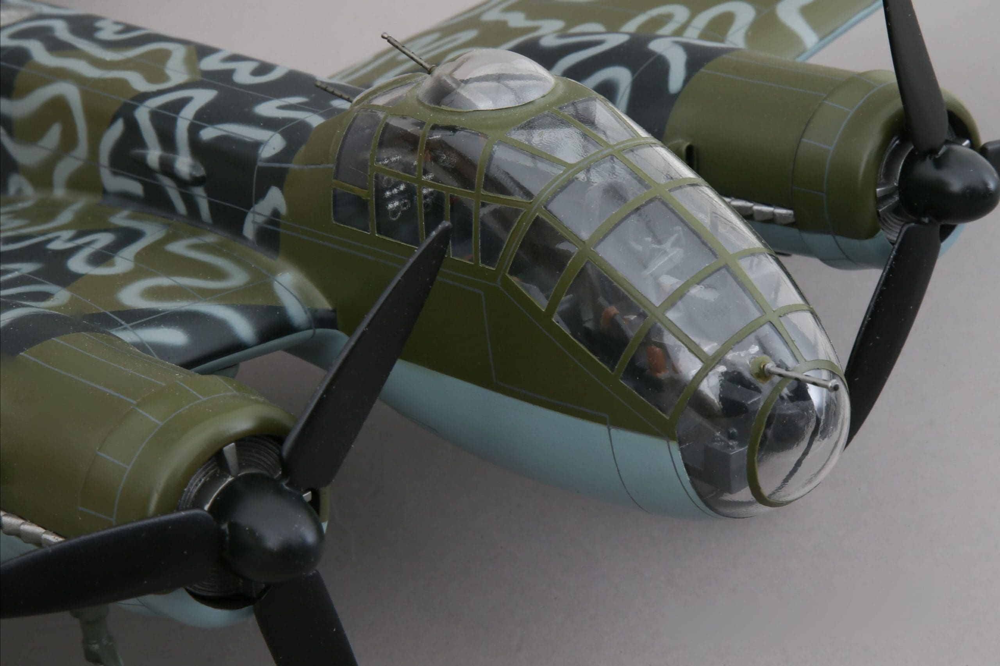
(저게 다 유리라면... 적 전투기로부터 기총소사 한 번 받으면 진짜 슬픈 일이 많이 벌어질 듯.)
흔히 플라스틱은 WW2 이후에야 대량 생산되었다고 오해하기 쉬움. 이유는 보병들의 소총 개머리판도 다 나무로 되어 있고 당시 비닐봉지 대신 종이봉투를 많이 사용했기 때문. 실제로 현대적인 비닐봉지, 그러니까 plastic bag이 발명된 것은 1965년 스웨덴 사람 Sten Gustaf Thulin에 의해서였고 미국에서 광범위하게 사용되기 시작한 것은 1980년대 초부터. 그러나 이미 WW2 이전부터도 플라스틱은 많이 사용되었음. 우리 말로는 그냥 다 비닐봉지라고 하지만 투명한 비닐, 즉 셀로판(cellophane)은 1908년 스위스 사람 Jacques E. Brandenberger에 의해 발명되었고, WW2 훨씬 이전부터 많이 사용되었음. 특히 서로 달라붙기 쉬운 각종 캔디류의 개별 포장재로 많이 사용되었음. 또 이젠 고전이 된 WW2 배경의 명작 라이언 일병 구하기의 노르망디 상륙 장면에서 소총을 비닐로 싸가지고 상륙하던 병사들이 몇몇 있었음. 실제로 많은 병사들이 소총이 물에 젖는 것을 막으려고 비닐로 싸서 상륙했는데, 영화에서는 실제 고증을 살리면서도 화면빨 좋게 만들기 위해 일부러 적은 수의 병사들에게만 비닐로 싼 소총을 주었다고.
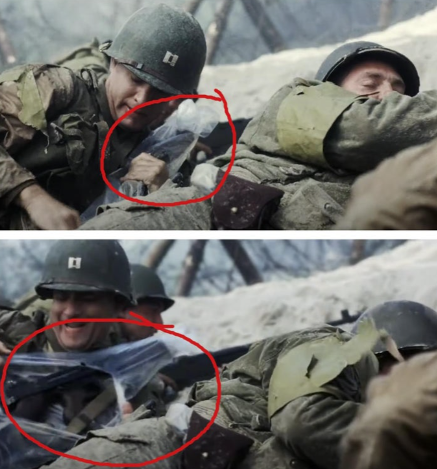 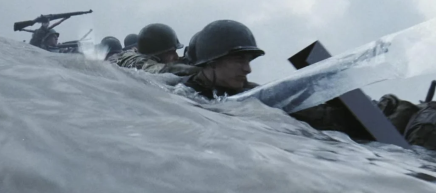
(영화 '라이언 일병 구하기'의 장면들) 그러니 WW2 당시의 군용기 유리창은 모두... 맞음. 모두 플라스틱임. 정확하게는 plexiglass라고 불리는 Polymethyl methacrylate (PMMA)이라는 합성수지로 만든 것임. 우연하게도 1928년 영국과 독일 등 여러 곳의 연구소에서 거의 동시에 발명된 Polymethyl methacrylate는 1933년 독일의 Röhm & Haas AG 사에서 최초로 Plexiglas (독일어라서 s가 하나임) 라는 이름으로 상용화 되었고, 이에 뒤질새라 영국에서도 Perspex 라는 상표명으로 제품이 나왔으며, 미국에서는 그보다 좀 더 늦게 1930년 후반에야 듀퐁(Dupont) 사에서 Lucite라는 이름으로 제품화했음. 그리고 누가 봐도 딱 입에 감기는 Plexiglass (영어에서는 s가 2개)가 작명에서는 완승을 거둠. 다들 플렉시글라스라고 불렀음.
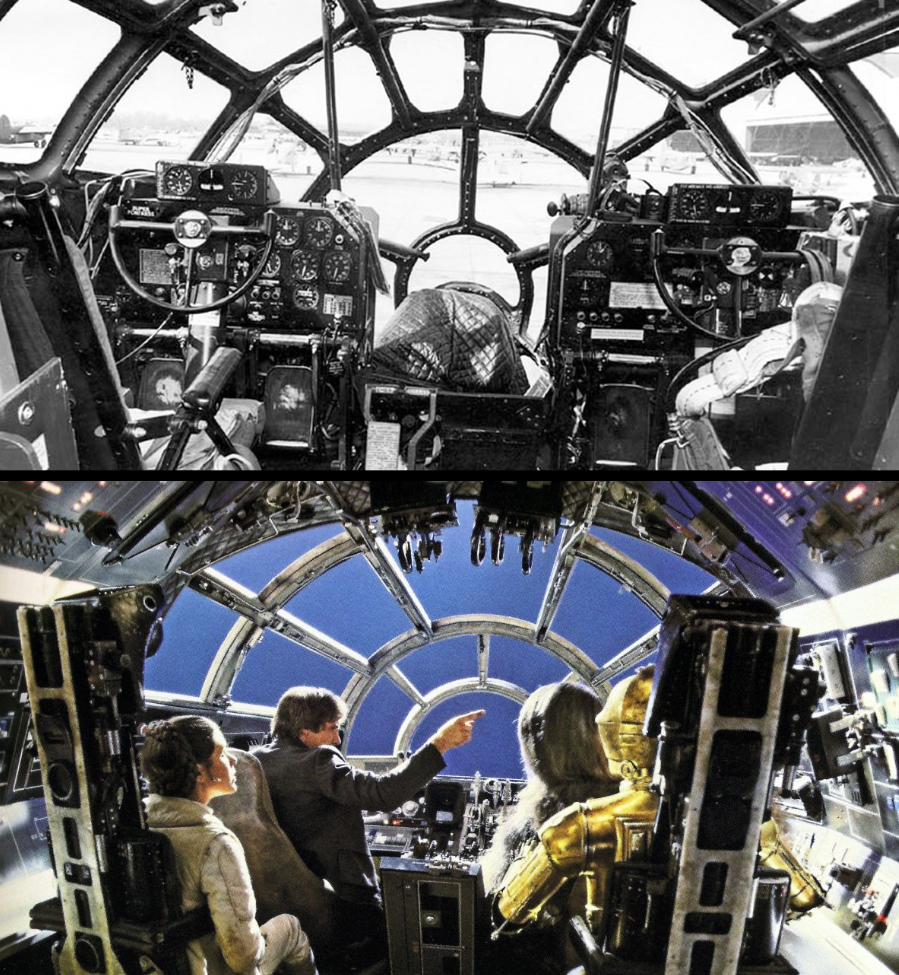
(당시 폭격기들의 머리 부분은 시야 확보를 위해 거의 전체가 유리창으로 되어 있는 경우가 많았는데, 실은 유리가 아니라 플렉시글라스, 즉 플라스틱이었던 것. 저 B-29 조종석의 모습은 스타워즈에 나오는 전설적 우주선 밀레니엄 팔컨 조종석의 모티브가 되었다고.) 이름이 무엇이든 간에 유리 대신 플렉시글라스를 항공기 방풍창에 사용하는 이유는 명백. 충격에도 더 강하고, 기관총탄이나 대공포 파편에 맞아도 날카로운 파편을 만들어내지 않았음. 플렉시글라스는 발화점이 섭씨 460 정도로 낮아서 화재에 취약한 것이 좀 문제긴 했지만 유리는 물론, 같은 합성수지 계열인 폴리스티렌(polystyrene)보다도 충격에 강하고 가시광선 투과율도 92%로서 우수. 특히 플렉시글라스의 원재료인 polymethyl methacrylate(폴리메타크릴산 메틸)은 열가공성, 즉 열을 가하면서 성형할 수 있는 성질이 좋아서 전투기용 캐노피 등 까다로운 곡면 모양도 쉽게 만들 수 있었기 때문. <Sweetheart Grip이란 무엇인가?> 따라서 미국 영국 독일 등 모든 나라에서 군용기의 방풍창은 모두 플렉시글라스를 사용. 뿐만 아니라 정말 튼튼해야 하는 유리, 가령 잠수함의 잠망경 유리도 플렉시글라스를 사용. 그러면 WW2 이전에 이런 plexiglass가 일반인들에게 매우 흔한 물건이었는가 하면 그건 또 아니었음. 당시로서는 꽤 최첨단 화학제품이었으므로 일반인들이 흔히 접하게 되는 건물용 유리는 (지금도 그렇지만) 여전히 그냥 유리를 사용. 지금도 일반적으로 플렉시글라스 판이 동일한 면적과 두께로 만든 유리판보다 약 1.5배에서 2배까지 비싸기 때문. 그런데 전쟁터의 군인들은 플렉시글라스가 무엇인지 알게되었을 뿐만 아니라, 가끔씩 공짜로 손에 넣게도 되었음. 바로 추락한 적군 혹은 아군 군용기의 유리창. 밴드오브브라더스 같은 영화를 보면 공수부대원들이 사용한 낙하산을 개인용으로 모으는 장면이 나오는데, 낙하산 재료가 비싼 실크였기 때문. 전쟁이 끝나고 집으로 가져가면 와이프나 애인이 옷을 만들 때 쓸 수 있었음. 그런데 아무리 튼튼하다고 해도 2~3 km 상공에서 추락한 폭격기의 플렉시글라스가 멀쩡할 리는 없고 대부분 깨진 것 뿐이었음. 그렇게 깨진 조각을 집에 가져가면, 그걸로 집의 창문에 유리로 쓸 수 있었을까? 당연히 없었음. 그러면 그렇게 쓸데없는 플렉시글라스로 병사들은 무엇을 했을까?
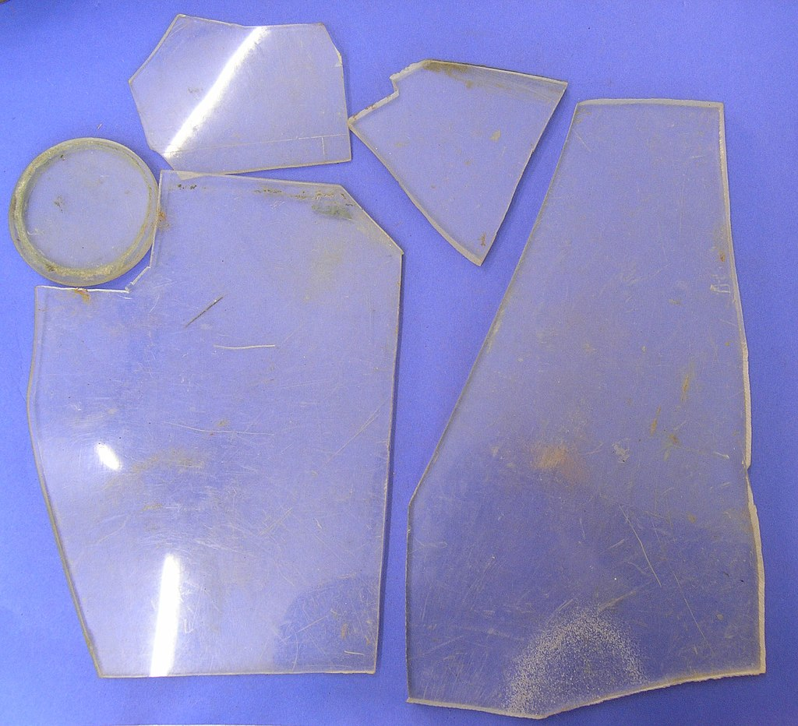
(이 플렉시글라스 파편은 영국에 추락한 독일 폭격기 창문에서 수거한 것) "Sweetheart Grip" 또는 "Pin-up Grip"이라는 것을 만들었음. 여기서의 grip이라는 것은 권총 손잡이, 더 세밀하게는 손잡이에 덧대는 판재를 말하는 것. 보통 이런 손잡이에 덧대는 판재는 이런저런 합성수지를 쓰거나 나무, 특수 고무 등을 썼는데, WW2 중 가장 유명한 그립은 당시 뉴스에도 보도 되었던 패튼 장군의 상아로 만든 손잡이.
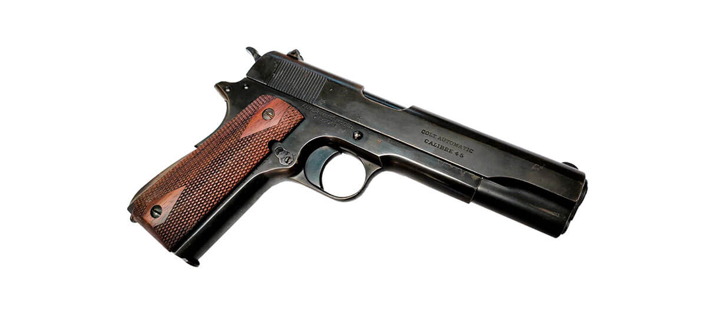
(일반적인 M1911 Colt 권총의 그립. 합성 수지 또는 특수 고무로 만들거나 드물게는 나무를 깎아 만들기도.)
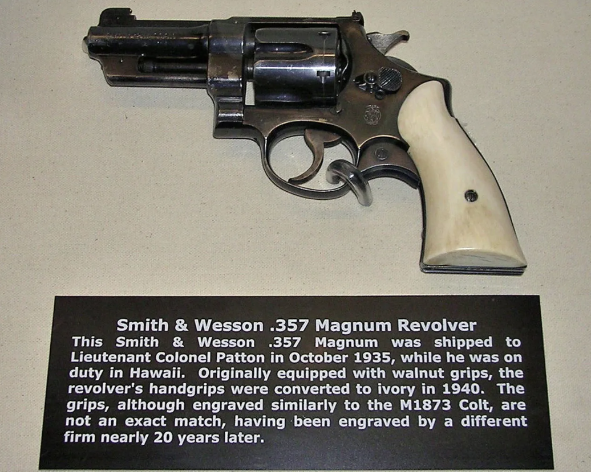
(바로 이거. 그러나 이렇게 실물을 보니 뭐 그닥 멋있어 보이지는 않음.)
그런데 패튼 장군의 권총 손잡이를 뉴스에서 보고 부러워하던 병사들은 자신들의 권총에도 개인 장식을 하고 싶어 했음. 남자들이 하고 하는 장식은 뻔함. 당시 미군 폭격기의 nose art에 자주 등장했던 것이 여성이었듯이, 병사들도 손잡이에 자신의 애인이나 와이프의 사진, 그런 거 없이 솔로인 병사들은 잡지에서 오려낸 여배우 사진을 넣고자 했음. 그런데 그런 사진은 더럽고 땀에 밴 손으로 쥐면 금방 망가짐. 그런데... 독일 것이든 미군 것이든 추락한 폭격기에서 투명하고 튼튼한 플렉시글라스를 쉽게 구할 수 있었음. 그걸 자르고 갈아서 기존의 불투명한 합성수지 그립을 뜯어내고 대신 투명 플렉시글라스로 교체하면서, 그 밑에 여자 사진을 집어 넣은 것. 그것이 바로 "Sweetheart Grip" 또는 "Pin-up Grip".
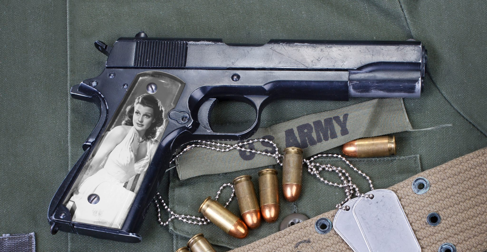 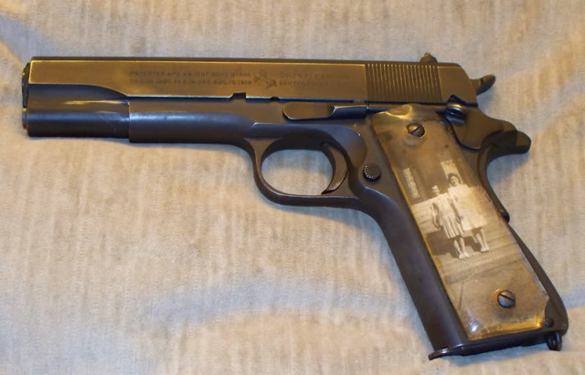 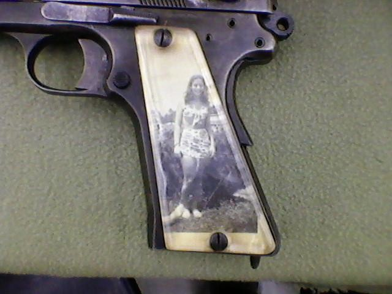 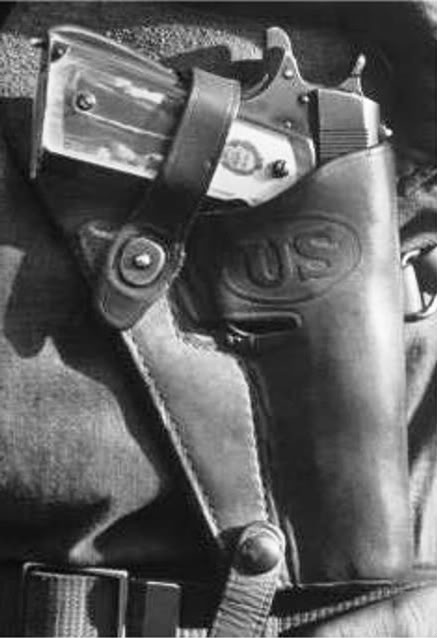
(다양한 Sweetheart Grip들)
전쟁 영화에서 많이 다루어지지 않아서 이런 권총 손잡이 장식이 당시 유행했었다는 것이 그렇게 많이 알려지지는 않았지만, 브래드 핏 주연의 WW2 탱크 영화 'Fury'에서 브래드 핏의 권총에 이런 Sweetheart Grip 장식이 되어 있는 장면이 잠깐 나옴. 그러나 워낙 작은 물체이고 사람들이 브래드 핏 얼굴만 쳐다보지 권총은 쳐다보지 않기 때문에 대부분 잘 모름.
(바로 이 장면) 그런데 잠깐. 이 블로그는 WW2 당시 레이더나 전파 관련 장비에 대한 것 아니었나? 왜 갑자기 플렉시글라스 이야기를 이렇게 길게 하지? 그 이유는... 분량 조절 실패로 다음 주에.